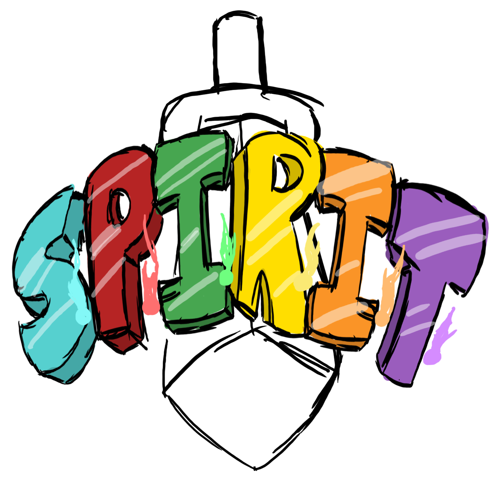

SPIRIT will be an action-adventure RPG for PC, set in a fantasy world filled to the brim with hostility and strange foes. The worlds of both the dead and the living have been suddenly and chaotically melded together, due to the separation of a weapon known as the SPIRIT Sword. It is up to the hero and his allies (currently unnamed) to locate all six pieces of this sword, being: Soul, Power, Intelligence, Revival, Inferno and Tether, and bring them back together, lest the world of the living becomes overrun by the dead and the villain's army. Will they succeed? Only you can decide!